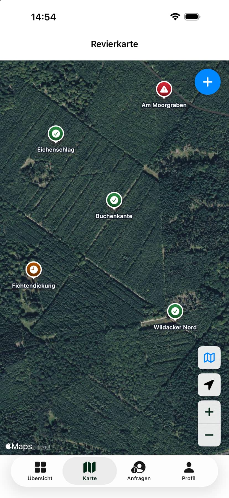

Wo liegt welche Kirrung?
Eine gemeinsame Kartenansicht macht Standorte für berechtigte Mitglieder direkt sichtbar.
Mobile App für iOS und Android · Revierorganisation
RevierHege bündelt Standorte, Status, Notizen und Änderungen in einer gemeinsamen Revieransicht. Entwickelt mit einer kleinen Pilotgruppe – für einen konkreten Ablauf im Jagdalltag.
Die Ausgangslage
Eine Kirrung ist eine kleine Futterstelle im Jagdrevier, die regelmäßig kontrolliert und aufgefüllt werden muss. Telefon, WhatsApp und Erinnerung reichten nicht immer aus, wenn eine kleine Gruppe dieselben Kirrungen betreute. RevierHege entstand aus dem Wunsch, den aktuellen Stand an einem Ort nachvollziehbar zu machen.
Eine gemeinsame Kartenansicht macht Standorte für berechtigte Mitglieder direkt sichtbar.
Der Status „In Ordnung“, „Leer“ oder „Kontrolle fällig“ zeigt, wo eine Kontrolle oder Handlung ansteht.
Notizen und Historie schaffen Nachvollziehbarkeit, ohne Informationen erneut abzufragen.

Das entstandene Produkt
Der MVP wurde nicht als Funktionssammlung gebaut. Karte, Status, Notizen, Historie und Revierzugang bilden genau den Ablauf ab, den die Pilotgruppe gemeinsam organisieren wollte. Neben der erprobten iOS-Version befindet sich inzwischen auch eine Android-Version im Betatest.
Kirrungen anzeigen und direkt auf der Karte anlegen.
Aktuellen Zustand festhalten und Informationen ergänzen.
Änderungen innerhalb der Reviergruppe nachvollziehen.
Daten bleiben auf die jeweils freigegebene Gruppe begrenzt.
Je Kirrung wahlweise 7, 14 oder 30 Tage; die App zeigt, wann die nächste Kontrolle fällig ist.
Einblicke in die App
Die Aufnahmen zeigen dieselben Abläufe auf iOS und Android: den Überblick über das Revier, die Kirrungen auf Karte und Liste, die Detailansicht einer Kirrung und das Eintragen einer Beschickung. Kirrungen und Namen sind Testdaten, aufgenommen am 18. Oktober 2026.
Bild auswählen, um die Ansicht zu vergrößern.
Häufige Fragen
Für alle, die nicht aus der Jagd kommen, und für alle, die RevierHege ausprobieren möchten.
Eine Kirrung ist eine kleine Futterstelle im Jagdrevier. Jäger legen dort etwas Futter aus, zum Beispiel Mais, und locken damit Wild an einen festen Platz, vor allem Wildschweine. Damit eine Kirrung funktioniert, muss jemand regelmäßig nachsehen und nachfüllen.
Für Reviere, in denen mehrere Jäger dieselben Kirrungen betreuen. Ohne gemeinsame Übersicht bleibt oft offen, wer zuletzt kontrolliert hat und wo Futter fehlt. RevierHege zeigt alle Kirrungen des Reviers auf einer Karte, mit Stand, Logbuch und Kontrollintervall. Wer kontrolliert oder nachfüllt, trägt es ein, und die anderen Mitglieder sehen es gleich.
Nein. RevierHege ist ein Werkzeug für die Arbeit im Revier, ohne Spielziel, Punkte oder Augmented Reality. Die Karte zeigt echte Orte, weil auch die Kirrungen echt sind.
Beim Erstellen des Kontos gibt es zwei Wege: ein eigenes Revier gründen oder einem bestehenden Revier mit dessen Revier-Code beitreten. Wer ein Revier gründet, verwaltet es und gibt Beitrittsanfragen frei. Den Revier-Code vergibt die Revierverwaltung.
Alle Mitglieder eines Reviers sehen dessen Kirrungen mit Stand, Notizen und Logbuch. In der Mitgliederliste sehen sie außerdem Namen und E-Mail-Adressen der anderen Mitglieder. Mitglieder anderer Reviere sehen davon nichts.
Den Standort des Geräts nutzt die App nur, wenn er auf dem Gerät freigegeben ist, etwa um ihn auf der Karte anzuzeigen. Ein Bewegungsprofil wird nicht gespeichert. Gespeichert wird der Standort jeder Kirrung, damit alle Mitglieder sie auf der Karte finden. Mehr dazu im Datenschutz der App.
Zum großen Teil. Bereits geladene Kirrungen bleiben sichtbar. Kirrungen anlegen, Status melden, Beschickungen und Notizen speichert die App auf dem Gerät und überträgt sie, sobald wieder eine Verbindung besteht. Eine Verbindung braucht sie für Anmeldung und Registrierung, das Kontrollintervall, eine spätere Änderung des Standorts, Archivieren und Löschen. Das gilt für die aktuellen Testversionen auf iOS und Android.
Auf dem iPhone mit iOS 17 oder neuer über den öffentlichen Link zu TestFlight.
Auf Android 8.0 oder neuer in drei Schritten:
Zum Ausprobieren reicht ein eigenes Test-Revier.
Die Teilnahme am Betatest kostet nichts. Die Testversionen enthalten keine Käufe.
Mitglieder löschen ihr Konto im Profil über „Konto löschen“. Admins und alle, die die App nicht mehr installiert haben, beantragen die Löschung per E-Mail. Alle Schritte und was danach erhalten bleibt, stehen unter Konto löschen.
Der Projektweg
Nicht die Menge der Funktionen war der Maßstab, sondern die Frage, was im Alltag hilft und ob daraus ein tragfähiges Produkt entstehen kann.
Ablauf, Rollen, Begriffe und Informationsbedarf mit der Pilotgruppe klären.
Einen engen MVP statt einer vollständigen Jagd-App definieren.
Die iOS-Version über TestFlight und die Android-Version im Betatest bereitstellen und mit Praxisfeedback verbessern.
Bedarf, bestehende Ersatzlösungen und Wettbewerbsumfeld außerhalb der Pilotgruppe prüfen.
Den kommerziellen Ausbau vorerst nicht weiterverfolgen.
Das Ergebnis
Ein funktionierender Pilot kann Nutzen bestätigen – ohne automatisch einen Markt zu beweisen.
RevierHege erfüllt den Anwendungsfall der Pilotgruppe. Die anschließende Marktvalidierung bestätigte jedoch nicht ausreichend, dass ein größerer kommerzieller Ausbau gegenüber vorhandenen Apps und etablierten Arbeitsweisen gerechtfertigt wäre.
Eine Android-Version erweitert den technischen Praxistest inzwischen auf eine zweite Plattform. Eine breitere Vermarktung ist aktuell weiterhin nicht geplant. Das Projekt bleibt eine Referenz für technische Umsetzung, Praxisvalidierung und eine begründete Produktentscheidung.
Übertragbare Methode
RevierHege zeigt, wie byte & Handwerk Produktideen behandelt: Arbeitsalltag verstehen, Annahmen begrenzen, unter realen Bedingungen prüfen und erst dann über Ausbau entscheiden.
Der beobachtete Ablauf bestimmt den ersten Umfang.
Echte Nutzung ersetzt Vermutungen durch Beobachtungen.
Ein begründetes Nein ist ein verwertbares Ergebnis.
Referenzprojekt von byte & Handwerk
Die vollständige Fallstudie beschreibt Ausgangsthese, Praxistest, Marktvalidierung und die Erkenntnisse für weitere digitale Piloten.